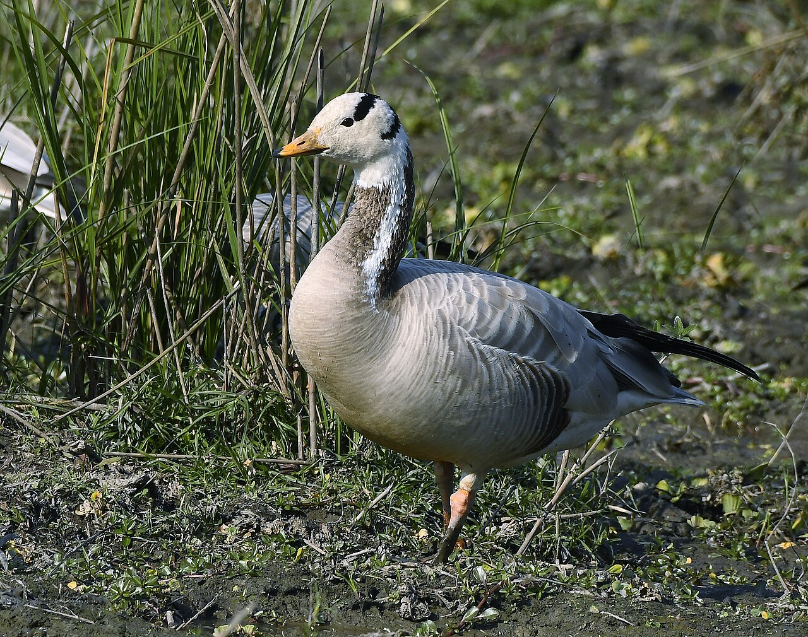
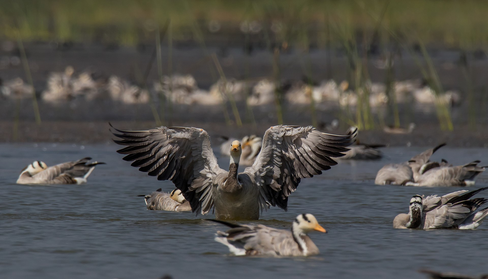

The Bar-headed Goose is a pale, high-flying migratory bird known for crossing the Himalayas. It breeds in Central Asia and winters in wetlands across the Indian subcontinent.

Bar-headed Geese prefer lakes, marshes, and riverbanks. They graze on grasses and crops, nest near water in colonies, and migrate seasonally over extreme altitudes with remarkable endurance.
Read more about this bird and its wonderous characteristics on portals like E-Bird.